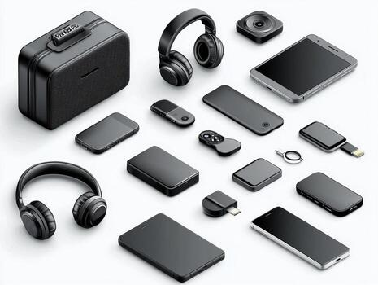
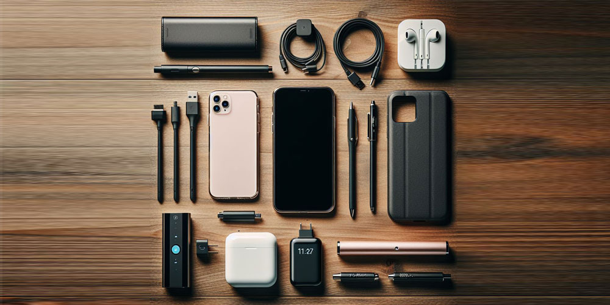

Phone accessories are extra items that help your phone more useful and fun. For example, a phone case protects your phone if you drop it. A screen protector keeps the screen from getting scratched or cracked.
Headphones or earbuds let you listen to music and watch videos without bothering other people. Chargers and power banks help keep your phone's battery full so you can use it much longer. Some people also use pop sockets or phone stands to hold their phones more easily.

This images gives you the information that all of the accessories will be important
